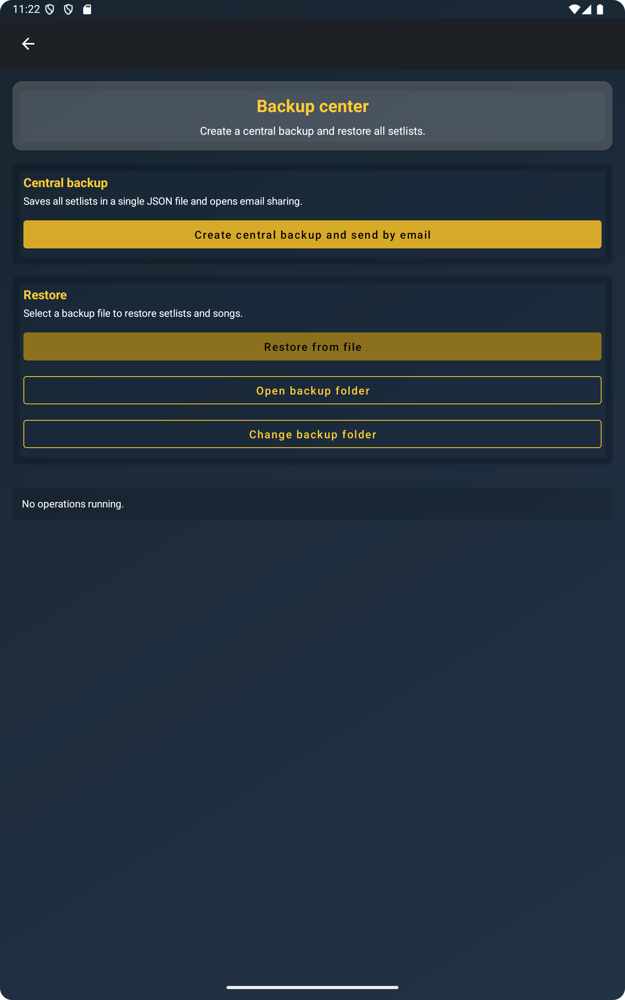
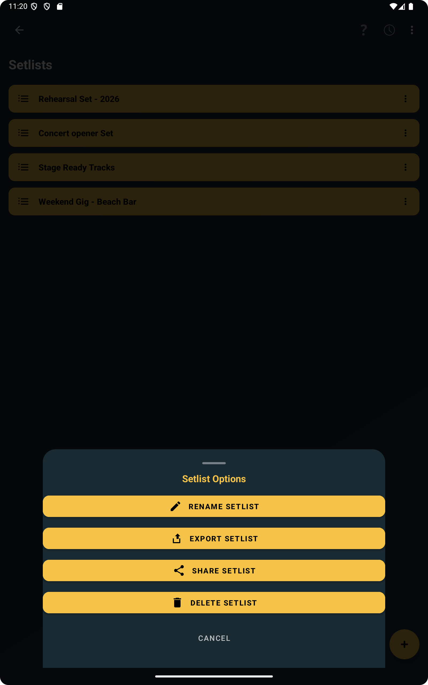
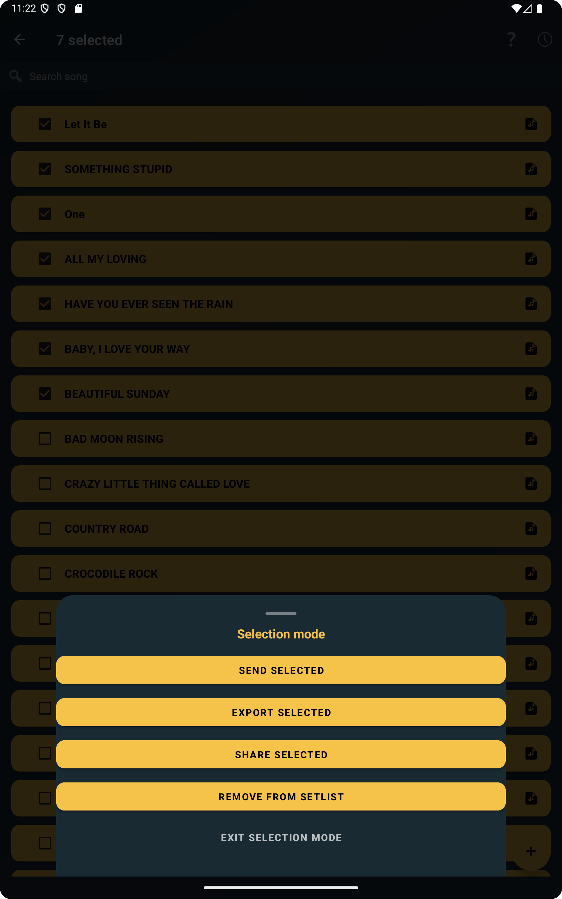
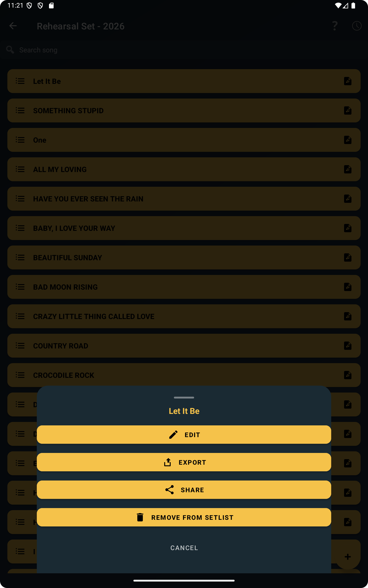

Keep your songs safe outside your device
A phone or tablet is convenient for rehearsal, but it should not be the only place where your repertoire exists. If all your preparation lives on one device, a problem with that device can immediately become a problem for your next rehearsal or performance. That is why exporting songs and setlists matters. It gives you a copy that exists outside the app and outside the device itself.
In practical terms, ChordFlow lets you create files from your repertoire so you can keep safe copies on another device, on a computer, or in your preferred storage workflow. This is useful even if nothing is wrong with your phone today, because backups work best when they are made before you actually need them.
The screenshot below illustrates that basic idea: backup is not a separate complicated system. It is part of the normal repertoire workflow inside the app.

Share songs and setlists by email or messaging apps
Backup is only one side of the workflow. Sharing is often just as important. In ChordFlow you can export a full setlist, a single song, or multiple selected songs at the same time.
Files can be shared by email, WhatsApp, or any other sharing app available on your device. That makes the feature useful for much more than personal backup. You can send a prepared repertoire to another musician, move selected songs to a second device you use on stage, or keep a clean copy of one specific setlist before making changes.
It also means you are not forced into one rigid workflow. Some musicians prefer sending files to themselves by email. Others use WhatsApp to move material quickly between devices. Others save copies on a computer after rehearsal. The important point is that the export file can travel through the sharing tools you already use every day.
The next screenshot supports that practical use case by showing how exporting a full setlist fits naturally into rehearsal preparation.

Sometimes you do not need the full repertoire. You may only want one song, or a small group of selected songs for a specific rehearsal. ChordFlow supports that too, which makes sharing more precise and avoids sending unnecessary material.

Transfer your repertoire between devices easily
Many musicians do not use only one device. You may prepare songs on your phone and then prefer reading them on a tablet during rehearsal. Or you may use a tablet at home and still want a compact copy on your phone when travelling. Export makes those transitions much easier because the repertoire is not trapped in one place.
This makes it easy to move your repertoire to another device without losing your work. Phone to tablet, tablet to phone, or Android to computer all become simple file workflows instead of a risky migration. That is especially valuable if one device is used for preparation and another is used for live performance.
If your songs are already well organized, as described in this article about setlists and repertoire structure, transferring them between devices becomes even smoother because you are moving a clean, usable repertoire rather than a random collection of scattered songs.
Prepare a backup before changing phone
Changing phone is one of the moments when musicians suddenly realize how much work is stored inside the app. It is not just song titles. It is often a curated repertoire, ordering choices, edited songs, imported material, and setlists that are already ready for real use.
Exporting your repertoire before changing device is one of the safest habits you can adopt. Instead of trusting that the migration process will handle everything perfectly, you already have a separate backup file prepared in advance. That reduces stress and gives you a clear recovery path if anything goes wrong during the move.
It also helps when you want to keep an older device as a rehearsal backup. You can export from the current phone, send the files to the second device, and keep both ready without rebuilding the repertoire manually.
Restore songs whenever you need them
A backup only matters if it can be used later. In ChordFlow, exported files are not dead archives. They can be brought back into your workflow when needed. That means a backup can serve both as protection and as a transfer tool.
If you restore after a device change, you get your songs back without rebuilding everything from memory. If you restore selected material onto another device, you can keep your main repertoire and your travel or rehearsal device aligned. And if you exported a clean version before making large edits, you always have a stable copy to return to.
This connects naturally with the import article, because the same practical mindset applies in both directions: bring songs in when needed, and export them out when you want to protect, share, or move your work.

Backup works without internet or user accounts
Many apps push users toward account systems and permanent online sync. ChordFlow takes a more practical route for this workflow. ChordFlow backup does not require an account or permanent internet connection.
That matters for musicians because rehearsals and gigs do not always happen in ideal online conditions. You may want to prepare everything in advance, export locally, and keep those files in your own way. The app supports that simpler workflow. Your backup process can stay under your control instead of depending on login state or cloud availability at the exact moment you need it.
In practice, that means you can keep safe copies, send files through the sharing apps you already use, and move your repertoire between devices without turning backup into a technical project.
FAQ
Can I backup songs without internet?
Yes. Backup and export do not depend on a permanent internet connection, which makes them practical for rehearsal and offline preparation.
Does backup include setlists?
Yes. You can export full setlists as part of your backup and sharing workflow.
Can I transfer songs to another device?
Yes. Export makes it easy to move songs and setlists between devices such as a phone, tablet, or computer.
Can I restore songs later?
Yes. Exported files can be imported again later when you need to recover or move your repertoire.
Related Reading
Keep a safe copy of the songs you already prepared
When your repertoire can be exported, shared, and restored without extra accounts or complicated setup, it becomes much easier to work across devices and protect the preparation you already did. ChordFlow helps you keep your songs portable instead of leaving them tied to a single phone or tablet.
Free · No ads · Works offline